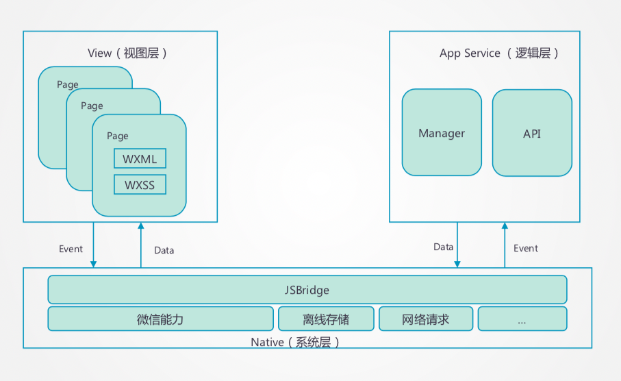
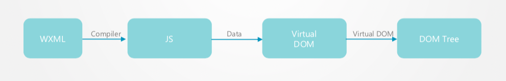
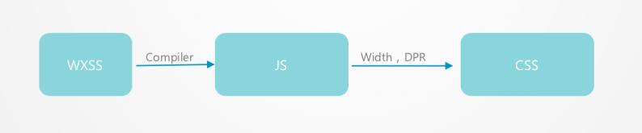
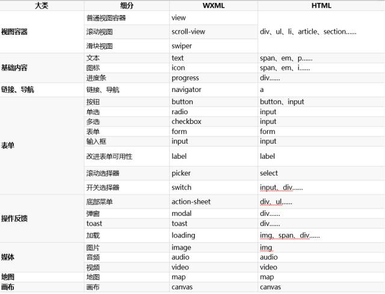
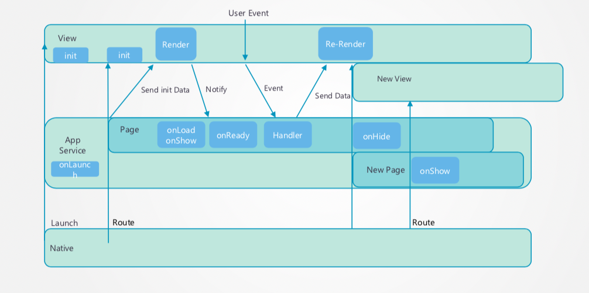
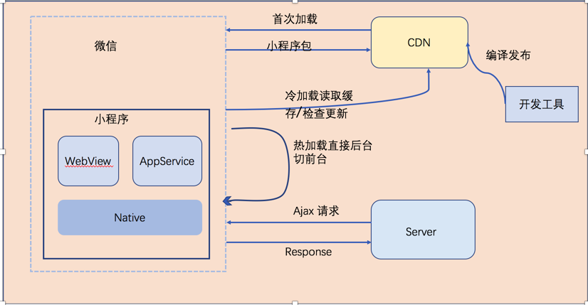

# 小程序使用总结
如题，小程序现在很普及，公司的前端不是在写 H5 页面，就是在写小程序，这篇文章并不是写小程序代码的编写，而是总结小程序原理部分。
- 小程序的特点
- 小程序的架构
- 小程序运行机制
- 小程序开发经验
# 小程序特点
小程序之所以发展迅猛，主要是基于以下五个特点：
- 跨平台：小程序跨越 android 和 ios 平台，降低开发成本降低了门槛。
- 流量大：共享微信平台 9 亿多的用户的流量，可以更方便地进行推广。
- 成本低：类 web 端开发模式，开发者可以更快地上手。
- 轻应用：无需下载注册，用完即走。
- 高体验：可以媲美原生 app 操作体验。
小程序为什么快？
- native 预先额外加载一个 webView，当打开指定页面时，用默认数据直接渲染，请求数据回来时局部更新。
- 返回上一个页面时，直接显示历史 view。
- 退出小程序，view 状态不销毁。
# 小程序架构
微信小程序的框架包含两部分 view 视图层、appService 逻辑层，view 层用来渲染页面结构，appService 层用来逻辑处理、数据请求、接口调用，它们在两个线程里运行。
视图层使用 webView 渲染，逻辑层使用 jsCore 运行。
视图层包括 wxml 文件和 wxss 文件。逻辑层包括我们写的 js。视图层和逻辑层采用 jsBridge 进行通信。逻辑层把数据变化通知到视图层，触发视图层页面更新，视图层把触发的事件通知到逻辑层进行业务处理。

# 视图层
视图层由 wxml 与 wxss 编写，由组件来进行展示。视图层的主要工作：将逻辑层的数据反应成视图，同时将视图层的事件发送给逻辑层。
# WXML
WXML(WeiXin Markup Language)，类比 web 开发中的 html。支持特性如下：
- 支持数据绑定。
- 支持逻辑算术运算。
- 支持模板引用。
- 支持添加事件(bindtap)。
wxml 运行流程： 
# WXSS
WXSS(WeiXin Style Sheets)，类比 web 开发中的 css。支持特性如下：
- 支持大部分 css 特性。
- 添加尺寸单位 rpx，可根据屏幕宽度自适应。
- 不支持多层选择器-避免被组件内结构破坏。（因为生成到 webView 中的 dom 树和实际的 wxml 会有差异。）
wxss 运行流程： 
# 小程序组件
小程序提供了一系列组件用于开发业务功能，类比 html 中的语义化标签。

小程序的组件基于 webComponent 标准，使用 polymer 框架进行实现。
# 源生组件
目前 native 实现的组件有 <canvas/> <video/> <map/> <textarea/>。
native 组件层在 webView 层之上。
# 逻辑层
逻辑层将数据进行处理后发送给视图层，同时接受视图层的事件反馈。
逻辑层主要功能：
- App 小程序的入口。
- Page 页面的入口。
- 提供丰富的 API，如微信用户数据，扫一扫，支付等微信特有能力。
- 每个页面有独立的作用域，并提供模块化能力。
- 数据绑定、事件分发、生命周期管理、路由管理。

如图所示：
- 一个小程序包含 1 个逻辑层和多个视图层。
- 每打开一个页面，就会创建一个新的 webView，创建 webView 是比较消耗资源和耗时的，所以微信限制最多只能嵌套 10 层。
逻辑层的运行环境在不同客户端下并不相同。
- ios - jsCore。
- android - x5 js 解析器。
- devTool - nwjs chrome 内核。
# 小程序运行机制
小程序启动会有两种情况，一种是冷启动，一种是热启动。
- 热启动。如果用户已经打开过某小程序，在一定时间内再次打开该小程序，此时无需重新启动，只需将后台状态的小程序切换到前台。
- 冷启动。用户首次打开或小程序被微信主动销毁后再次打开的情况，此时小程序需要重新加载启动。
# 运行机制
- 小程序没有重启的概念。
- 当小程序进入后台，客户端会维持一段时间的运行状态，超过一定时间后（目前是 5 分钟）会被微信主动销毁。
- 当短时间内（5s）连续收到两次以上收到系统内存告警，会进行小程序的销毁。

# 更新机制
小程序冷启动时如果发现有新版本，将会异步下载新版本的代码包，并同时用客户端本地的包进行启动，即新版本的小程序需要等下一次冷启动才会应用上。如果需要马上应用最新版本，可以使用 wx.getUpdateManager API 进行处理。
# 小程序开发经验
- 小程序可以借鉴的优点
- 小程序存在的问题
# 小程序可以借鉴的优点
- 提前新建 webView，准备新页面渲染。
- view 层和逻辑层分离，通过数据驱动，不直接操作 dom。
- 使用 virtual dom，进行局部更新。
- 全部使用 https，确保传输中安全。
- 使用离线能力。
- 前端组件化开发。
- 使用 rpx 单位，隔离设备尺寸，方便开发。
# 小程序存在的问题
- 小程序仍然使用 webView 渲染，并非原生渲染。
- 需要独立开发，不能在非微信环境运行。
- 开发者不可以扩展新组件。
- 服务端接口返回的头无法执行，比如：set-cookie。
- 依赖浏览器环境的 js 库不能使用，因为是 jsCore 执行的，没有 window、document 对象。
- wxss 中无法使用本地(图片、字体等)。
- wxss 转化成 js 而不是 css，为了兼容 rpx。
- wxss 不支持级联选择器。
- 小程序无法打开页面，无法拉起 app。
- 小程序不能和公众号重名，于是小程序的名字就成了：自选股+、滴滴出行 DiDi。
# 常见的开发优化
# setData 优化
当前，视图层和逻辑层的数据传输，实际上通过两边提供的 evaluateJavascript 所实现。即用户传输的数据，需要将其转换为字符串形式传递，同时把转换后的数据内容拼接成一份 js 脚本，再通过执行 js 脚本的形式传递到两边独立环境。
应避免以下操作，可能会造成页面卡顿。
- 频繁的去 setData。
- 每次 setData 都传递大量新数据。
- 后台态页面进行 setData。
# 代码包大小的优化
开发者在实现业务逻辑同时也有必要尽量减少代码包的大小，因为代码包大小直接影响到下载速度，从而影响用户的首次打开体验。除了代码自身的重构优化外，还可以从这两方面着手优化代码大小：
- 分包加载，对小程序进行分包，可以优化小程序首次启动的下载时间
- 清理没有使用到的代码和资源
目前小程序打包是会将工程下所有文件都打入代码包内，也就是说，这些没有被实际使用到的库文件和资源也会被打入到代码包里，从而影响到整体代码包的大小。
# 预加载优化
小程序在启动时，会直接加载所有页面逻辑代码进内存，即便 page2 可能都不会被使用。在 page1 跳转至 page2 时，page1 的逻辑代码 js 数据也不会从内存中消失。page2 甚至可以直接访问 page1 中的数据。
小程序的这种机制差异正好可以更好的实现预加载。通常情况下，我们习惯将数据拉取写在 onLoad 事件中。但是小程序的 page1 跳转到 page2，到 page2 的 onLoad 是存在一个 300ms ~ 400ms 的延时的。
因为小程序的特性，完全可以在 page1 中预先拿取数据，然后在 page2 中直接使用数据，这样就可以避开 redirecting 的 300ms ~ 400ms 了。最简单的使用，是在路由跳转时，先请求数据，然后将数据挂载到全局对象中，在新页面直接读取。